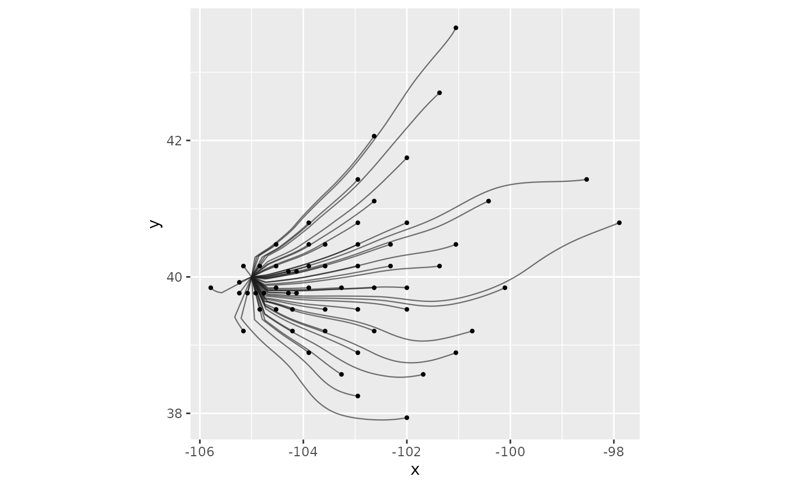

Paths of material through a random walk
random_walk_paths.RdTraces the routes by which material moves in a random walk model: for a downwind walk, the
paths from the source(s) to where material is deposited (or leaves the domain); for an upwind
walk, the paths from where material originates to the receptor(s). The result is path data in
the same layout as least_cost_paths(), for drawing with geom_wind_path(). Where
least_cost_paths() gives the single fastest route between places, these paths show the full
spread of routes, weighted by how much material uses each.
Arguments
- rose
A
wind_rose.- init
Source(s) for a downwind walk, or receptor(s) for an upwind walk, as for
random_walk(): a two-column matrix of point coordinates, or a raster of weights.- to
Optional points to trace paths to, as a two-column matrix (or data frame) of longitude and latitude, or a
SpatVectorof points. For a downwind walk, each path runs from a source to one of these points: the mean route by which material deposited there arrives. For an upwind walk, each path runs from one of these points to a receptor. IfNULL(the default),npoints are placed in proportion to where material ends up (see details).- n
Number of paths, when
toisNULL.- ...
Further arguments passed to
random_walk(), such asdirection,half_life,latitude_correction, ortimescale. The walk is always run in stream mode with flux, somode,flux,density,iter, andrecordcan't be supplied.
Value
A data frame with one row per point along each path, ordered from upstream to
downstream: trail (path ID; with to, the row of to the path was traced from),
step (position along the path, from 0 at its upstream end), and x and y
(coordinates). For downwind walks, each path starts at a source and
ends where its material is deposited or leaves the domain; for upwind walks, it starts
where its material originates and ends at a receptor.
Details
Despite the name, these paths involve no randomness. They are not simulated random walks:
individual particles in a random walk zigzag unpredictably, and no path here follows one.
Instead, each path is a streamline of the walk's net flux of material (see flux in
random_walk()), computed deterministically from the stream-mode solution. A streamline is
the mean route of the material that travels along it, so the paths show where material goes
on average. Running the function twice gives identical results.
How paths are placed. For a downwind walk, n end points are placed in proportion to
where material ends up: deposition in each cell, plus material leaving the domain across its
edges (with half_life = Inf, there is no deposition, so all paths end at the edges). End
points are placed deterministically, by dividing the total into n equal shares and putting
one end point at the middle of each share; several end points falling in one cell are spread
across it on a regular grid. Each path is then traced backward along the flux until it reaches
a source. Because each end point represents an equal share of the material, each path carries
an equal share too: the density of paths shows where material goes, and each path's end shows
where its share lands. For an upwind walk, start points are placed in proportion to the
origin of material deposited at the receptor(s), and paths are traced forward along the flux
to a receptor.
Paths to chosen points. With to, paths are traced from the given points instead, like
least_cost_paths() to chosen destinations. Each path is still the mean route of the material
moving through its end point, but the paths no longer carry equal shares of material, so their
density has no meaning. Points the flux doesn't reach (e.g. upwind of the source, with a short
half-life) can't be traced, and are dropped with a warning.
Since most material is typically deposited near its source, most sampled paths are short; use a
larger n to resolve long-distance routes. With half_life = Inf, paths depend on where the
domain edges are, as do all random walk results without deposition.
See also
random_walk(); least_cost_paths() for fastest routes; geom_wind_path() to draw
the paths.
Examples
# \donttest{
library(ggplot2)
rose <- windscape_example("wind_rose")
site <- cbind(-105, 40)
p <- random_walk_paths(rose, site, n = 60, half_life = 48)
#> iteration timestep: ~0.935
#> decay per step (lambda): ~0.0133
#> (timestep and half_life are in hours IF trans == 1 and wind_field units are m/s)
#> fraction of released mass lost across domain edges: 0.00032
# paths, with a dot where each path's share of material is deposited
ends <- p[!duplicated(p$trail, fromLast = TRUE), ]
ggplot(p, aes(x, y)) +
geom_wind_path(arrow = NULL, alpha = 0.6) +
geom_point(data = ends, size = 0.8) +
coord_quickmap()

# }